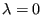

Keyword type: step
This procedure is used to determine the buckling load of a structure. The load active in the last non-perturbative *STATIC step, if any, will be taken as preload if the perturbation parameter is specified on the *STEP card. All loads previous to a perturbation step are removed at the start of the step; only the load specified within the buckling step is scaled till buckling occurs. Right now, only the stress stiffness due to the buckling load is taken into account and not the large deformation stiffness it may cause.
Buckling leads to an eigenvalue problem whose lowest eigenvalue is the scalarthe load in the buckling step has to be multiplied with to get the bucklingload. Thus, generally only the lowest eigenvalue is needed. This value is alsocalled the buckling factor and it is always stored in the .dat file.
SOLVER is the only parameter. It specifies which solver is used to determinethe stress stiffness due to the buckling load and to perform adecomposition of the linear equation system. This decomposition is done onlyonce. It is repeatedly used in the iterative procedure determining theeigenvalues (the buckling factor). The following solverscan be selected:
Default is the first solver which has been installed of the following list:SGI, PARDISO, SPOOLES and TAUCS. If none is installed, no eigenvalue analysis can be performed.
The SGI solver should by now be considered as outdated. SPOOLES is very fast, but has noout-of-core capability: the size of systems you can solve is limited by yourRAM memory. With 2GB of RAM you can solve up to 250,000 equations. TAUCS isalso good, but my experience is limited to the  decomposition, whichonly applies to positive definite systems. It has an out-of-core capabilityand also offers a  decomposition, however, I was not able to run either ofthem so far. PARDISO is the Intel proprietary solver and is to my knowledgepresently the fastest.
decomposition, however, I was not able to run either ofthem so far. PARDISO is the Intel proprietary solver and is to my knowledgepresently the fastest.
First line:
The eigenvalues are automatically stored in file jobname.dat.
Example: *BUCKLE 2
calculates the lowest two buckling modes and the corresponding buckling factors. For the accuracy, the number of Lanczos vectors and the number of iterations the defaults are taken.
Example files: beam8b,beamb.